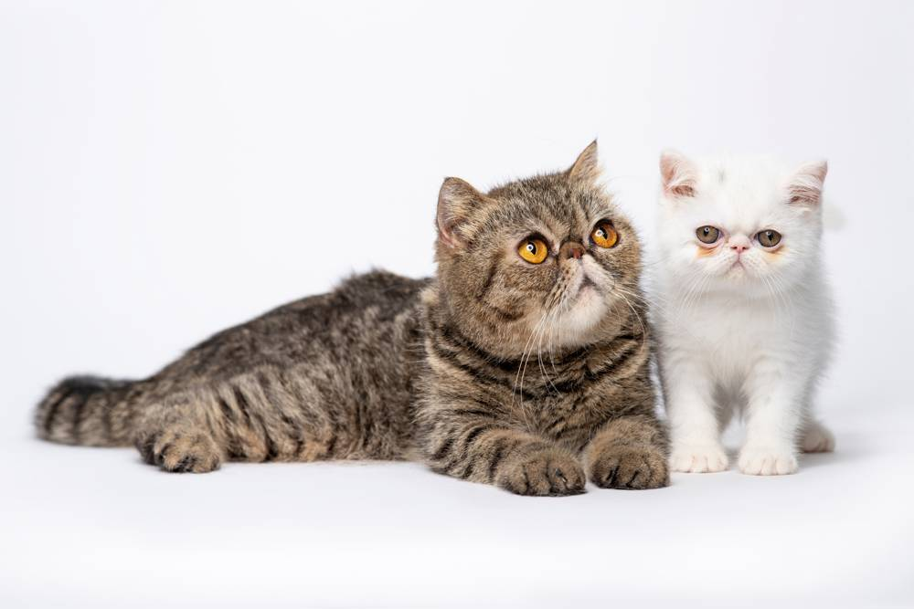
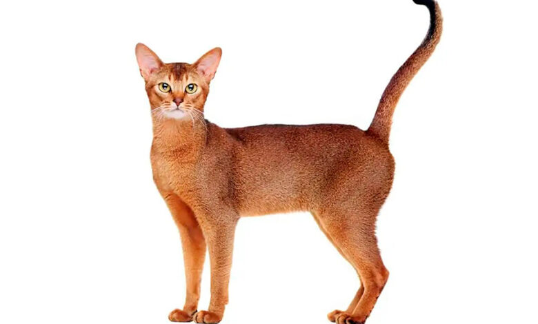

CATEGORIA I : LOS GATOS PERSAS Y EXÓTICOS
Ambos se parecen mucho en su cuerpo, distinguiéndose en cuanto a la longitud de su pelo. Mientras que el gato persa tiene el pelo largo, el exótico lo tiene corto.
Gatos Exóticos
Además, el gato exótico difiere en su comportamiento, ya que es un gato muy cariñoso y dependiente de sus dueños. Llega a ser tan cariñoso, que muchos dueños afirman que se parece a un perro, y llega a responder a la llamada de su amo.
El gato persa, aún cariñoso, es mucho más independiente. Dedicaremos otro artículo en exclusiva a este tipo de gatos, para no extendernos demasiado.
Gatos Persas
El gato persa, aun cariñoso, es mucho más independiente. Dedicaremos otro artículo en exclusiva a este tipo de gatos, para no extendernos demasiado.

CATEGORIA III : GATOS DE PELO CORTO
Gato Abisinio
Gato de aspecto salvaje, mirada extraña y jaspeado característico que hace que tenga una fisonomía muy parecida a la del puma. Su cabeza es cuneiforme, con una frente abombada.